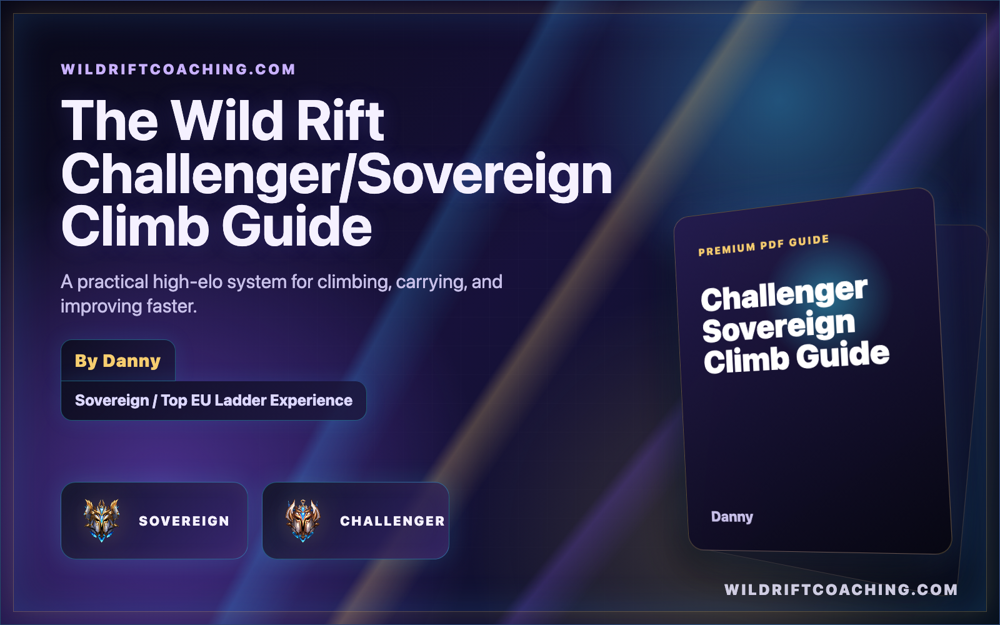

Macro and tempo
Learn how waves, resets, jungle pathing, vision, and objective timers create better fights before they start.
Read the macro guideA 50+ page Wild Rift climb guide by Danny for players who want a structured way to improve macro, role fundamentals, wave management, objective setup, replay review, and ranked routines.

Use this guide when you want more than scattered tips. It connects role habits, macro, objectives, VOD review, and ranked discipline into one practical system.
Learn how waves, resets, jungle pathing, vision, and objective timers create better fights before they start.
Read the macro guideStudy the repeated decisions that matter for jungle, mid, ADC, support, and Baron lane instead of treating every role the same.
Start with mid macroUse review prompts and worksheets to find the mistake before the fight: late recalls, bad waves, weak vision, and unclear win conditions.
Review your VODThe PDF is the full structured version. If you want to sample Danny's coaching style first, start with the free Wild Rift guides below and then use the PDF when you want everything in one place.
The guide is best when you want a system to study between ranked sessions. A VOD review is better when you want Danny to find the biggest pattern in one replay. Coaching is best when you want live feedback and a plan built around your rank, role, champion pool, and goals.
Best for players who want a structured self-study system with role chapters, macro, review prompts, and worksheets.
Buy on PayhipBest when you know something is wrong in your games but cannot see the repeated mistake clearly.
See VOD reviewBest when you want Danny to apply the ideas directly to your games and build a clear improvement path.
See coachingThe guide covers role fundamentals, macro, wave management, objective setup, vision, teamfight decisions, replay review, ranked routines, and worksheets for players who want a clearer climb system.
The PDF guide gives a structured system you can study on your own. Coaching is more personal because Danny applies those ideas directly to your replay, role, champion pool, and rank.
Yes. The replay review sections pair well with a Wild Rift VOD review because they help you mark deaths, objective setup, recall timing, wave states, and repeated macro mistakes.
The guide is sold through Payhip. Use the secure checkout link here: https://payhip.com/b/kXKR7.
Use the PDF for the system, then book coaching or send a replay when you want Danny to point out the exact habits holding your climb back.